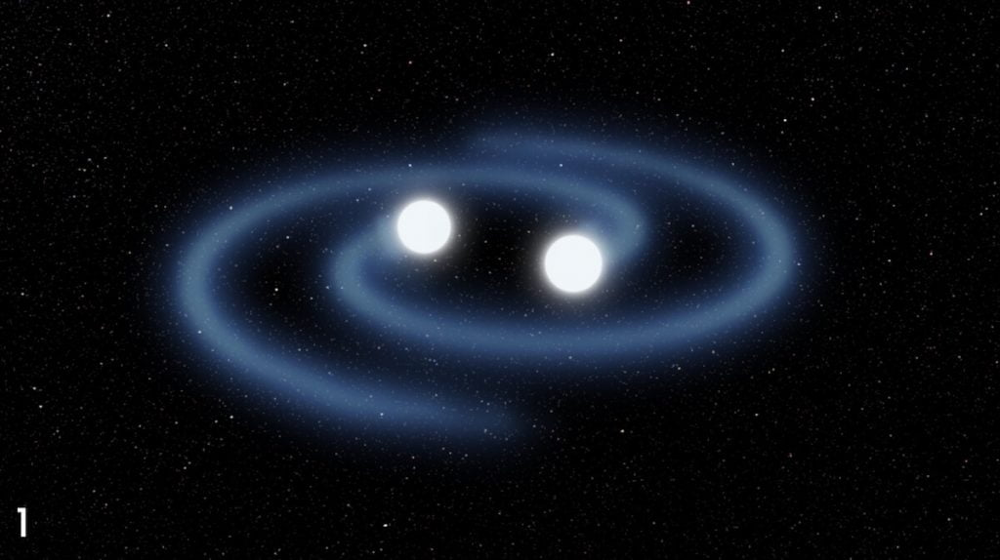
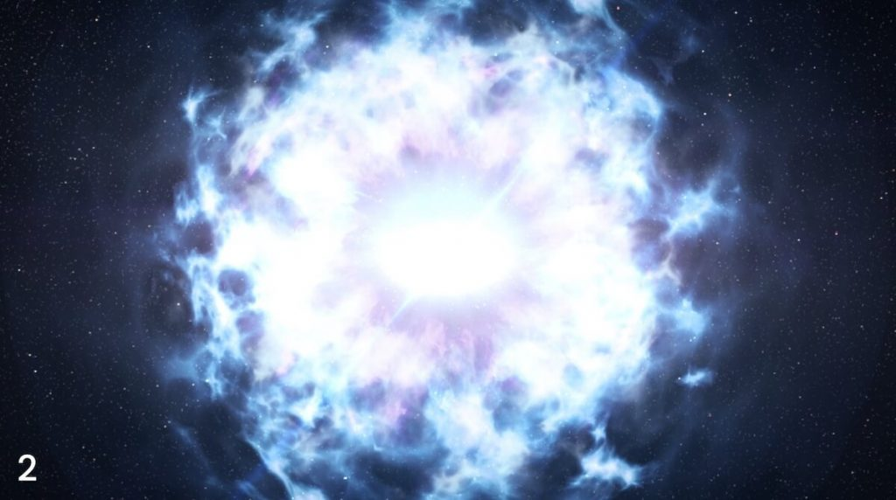
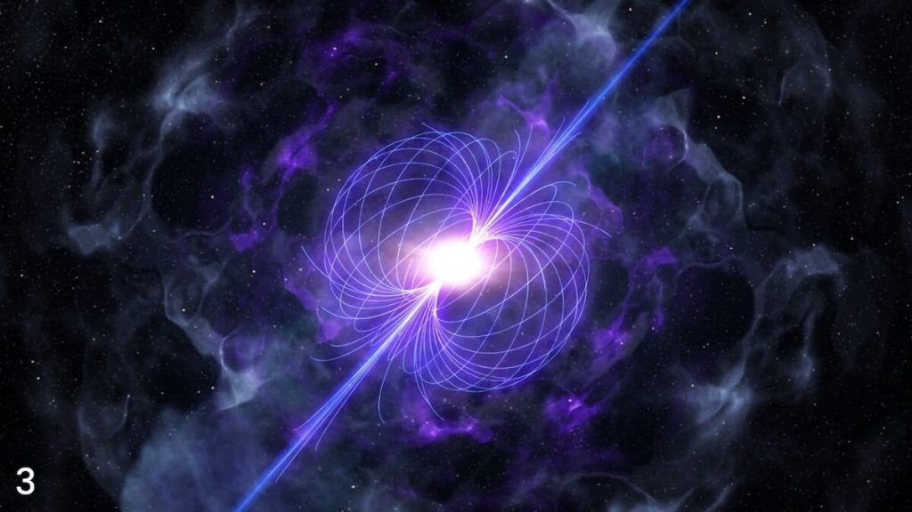
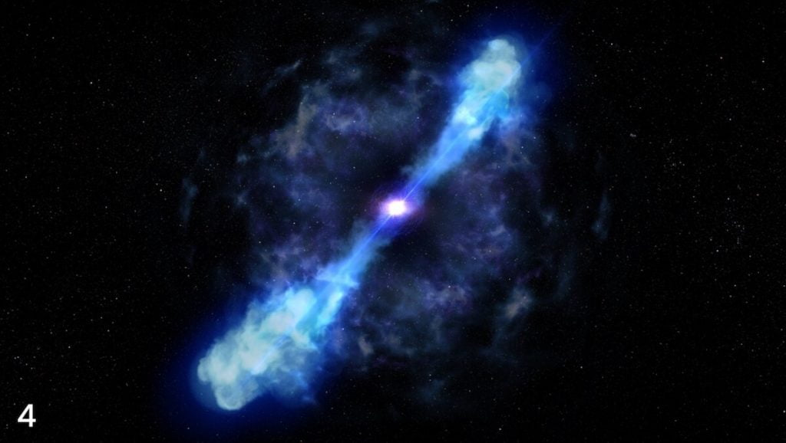

ဒီ အလွန်တရာမှ တောက်ပတဲ့ ရောင်ခြည်တွေဟာ နျူထရွန် ကြယ် နှစ်စင်း တိုက်မိပြီး ကြီးမားတဲ့ ကြယ်တစ်စင်း အနေနဲ့ ပေါင်းစပ်မိ သွားတဲ့ အချိန်မှာ ပေါ်ထွက်လာတာ ဖြစ်ပါတယ်။ ဒီ အင်မတန် တောက်ပတဲ့ ရောင်ခြည်တွေဟာ သံလိုက်ကြယ် တစ်စင်း ပေါ်ထွန်းလာတာကို ညွှန်ပြနေပါတယ်။ ဒါပေမယ့် ပညာရှင်တွေကတော့ အခြား ဖြစ်နိုင်တဲ့ အကြောင်းရင်းခံ အချက်တွေကိုလဲ တင်ပြထားပါတယ်။
ဒီ နျူထရွန်ကြယ် နှစ်စင်း တိုက်မိတဲ့ ဖြစ်စဉ်ကို အမေရိကန် ပြည်ထောင်စု အီလီနွိုက်စ် ပြည်နယ် အီဗင်စတန် မြို့က အနောက်မြောက်ပိုင်း တက္ကသိုလ် (Northwestern University in Evanston) က နက္ခတ်သိပ္ပံ ပညာရှင်တွေက ရှာဖွေ တွေ့ရှိခဲ့တာ ဖြစ်ပါတယ်။
မေလ ၂၂ ရက်က နာဆာရဲ့ နက္ခတ်လေ့လာရေး ဂြိုဟ်တု ကနေ ပြင်းထန်တဲ့ ဂါမာရောင်ခြည် လှိုင်းတွေကို ထောက်လှမ်း ရရှိ ခဲ့ပါတယ်။ ဒီ လှိုင်းတွေ ထွက်ပေါ်လာတဲ့ ဒေသကို သေခြာ လေ့လာကြည့်လိုက်တော့ ဂါမာ လှိုင်း တွေတင်မက X-ray လှိုင်းတွေ၊ အလင်း နဲ့ အနီအောက် ရောင်ခြည် လှိုင်းတွေပါ အမြောက်အများ ထွက်ပေါ်နေတာ တွေ့ရှိခဲ့ပါတယ်။
ဒီ ထွက်လာတဲ့ လှိုင်းတွေကို ခွဲခြမ်းစိတ်ဖြာပြီး လေ့လာ ကြည့်တဲ့ အခါမှာ နျူထရွန် ကြယ်တွေ တိုက်မိတဲ့ အခါ ထွက်ပေါ်လာတဲ့ ကီလိုနိုဗာ (Kilonova) လို့ခေါ်တဲ့ လှိုင်းပေါက်ကွဲမှုနဲ့ တူညီတာကို တွေ့ကြရပါတယ်။
ဒီ ကီလိုနိုဗာတွေဟာ အလွန် သိပ်သည်းတဲ့ နျူထရွန် ကြယ် နှစ်စင်း တိုက်မိပြီး တစ်ခုထဲ အဖြစ် ပေါင်းမိသွားတဲ့ အချိန်မှာ ဖြစ်ပေါ်လာတာလို့ ယူဆကြပါတယ်။ ဒီလို တိုက်မိပြီး ပေါင်းသွားတဲ့ အချိန်မှာ နျူထရွန် အမြောက်အများ ပါဝင်တဲ့ ပစ္စည်း တွေဟာ ကြယ်သစ်ကြီးရဲ့ ပတ်ခြာလည်မှာ ပြန့်ကျဲထွက်သွားပါတယ်။ ဒီလို နျူထရွန် အများအပြား ပါဝင်တဲ့ ပစ္စည်းတွေကို နျူထရွန် ကြယ်တွေရဲ့ ပတ်လည်မှာပဲ တွေ့ရလေ့ ရှိပြီး အခြားနေရာ တွေမှာ မတွေ့နိင်ပါဘူး။




ဒီလို နျူထရွန် အများအပြား ပါတဲ့ ဒြပ်စင်တွေ ပျက်စီး သွားတဲ့ အခါ ပြင်းထန်တဲ့ အပူတွေ ထွက်လာပါတယ်။ ဒီ အပူတွေကြောင့် ကြယ်သစ်ကြီးရဲ ပတ်ခြာလည်က ဓါတ်ငွေ့တွေ ဟာ အလင်းရောင် နဲ့ အနီအောက် ရောင်ခြည်တွေနဲ့ တောက်ပ ထိန်လင်းလို့ လာပါတယ်။
ဒီလို အလင်းနဲ့ အနီအောက် ရောင်ခြည် အမြောက်အများ ထွက်လာတဲ့ ဖြစ်စဉ်ကို ကီလိုနိုဗာ လို့ ခေါ်တာ ဖြစ်ပါတယ်။
ရူပဗေဒ ပညာရှင် တွေက ကီလိုနိုဗာ တွေဟာ နျူထရွန် ကြယ်တွေ အချင်းချင်း တိုက်မိကြတဲ့ အခါတိုင်း ထွက်ပေါ်လာလေ့ ရှိတယ်လို့ ယူဆကြပါတယ်။
ဒါပေမယ့် ဒီလို တိုက်မိပြီး ပေါင်းသွားတဲ့ အခါ ကီလိုနိုဗာ အပြင် အခြား တောက်ပတဲ့ အလင်း ရောင်ခြည်တွေလဲ ထွက်လာပါ သေးတယ်။ ဒီ တောက်ပတဲ့ အလင်းရောင်ဟာ တခါတရံ ကီလိုနိုဗာက ထွက်တဲ့ လှိုင်းတွေ အလင်းရောင်တွေ ကိုတောင် ဖုံးသွားတတ်ပါတယ်။ ဒီလို ဖုံးသွားရင် ကီလိုနိုဗာ တွေက ထွက်တဲ့ ရောင်ခြည် ကို ရှာရ ခက်သွားတတ်ပါတယ်။
ဒါ့ကြောင့်လဲ သိပ္ပံ ပညာရှင်တွေဟာ အခုထက်ထိ ကီလိုနိုဗာ ပေါက်ကွဲမှု လို့ တိတိပပ ပြောနိုင်တဲ့ ဖြစ်စဉ် တစ်ခုပဲ ရှာတွေ့ပါ သေးတယ်။ ဒီ ကီလိုနိုဗာကို ၂၀၁၇ ခုနှစ် ဧပြီလက ရှာတွေ့ခဲ့တာ ဖြစ်ပါတယ်။
အခု နောက်ဆုံး တွေ့တဲ့ ကီလိုနိုဗာဟာ ၂၀၁၇ ခုနှစ်က ရှာတွေ့ခဲ့တဲ့ ကီလိုနိုဗာထက် အဆများစွာ ပိုပြီး တောက်ပပါတယ်။ အခုထိ ကီလိုနိုဗာ လို့ ယူဆလို့ ရတဲ့ တွေ့ခဲ့ ပြီးသမျှ အရာဝတ္ထု တွေထဲမှာ အခု နောက်ဆုံး ရှာတွေ့တဲ့ ကီလိုနိုဗာက အတောက်ပဆုံး ဖြစ်ပါတယ်။
တောက်ပမှုတွေ အထဲမှာ အသိသာ ဆုံးက Infrared ခေါ်တဲ့ အနီအောက် ရောက်ခြည် လှိုင်းတွေရဲ့ တောက်ပမှုပဲ ဖြစ်ပါတယ်။ တိုင်းထွာမှု တွေအရ အနီအောက် ရောင်ခြည်ရဲ့ တောက်ပမှုဟာ ဒုတိယ လိုက်တဲ့ အခြား ကီလိုနိုဗာ တောက်ပမှုထက် အဆပေါင်း ၁၀ ဆ လောက်ထိအောင် ပိုပြီး တောက်ပပါတယ်။
သူတို့ရဲ့ ယူဆချက် အရတော့ ဒီ နျူထရွန် ကြယ်နှစ်စင်း တိုက်မိရာကနေ “သံလိုက်ကြယ်” အဖြစ် ပေါက်ဖွားလာတယ် ဆိုပါတယ်။ သံလိုက်ကြယ် ဆိုတာက နျူထရွန် ကြယ် အမျိုးအစား တစ်မျိုး ဖြစ်ပါတယ်။ ပုံမှန်အားဖြင့်တော့ နျူထရွန် ကြယ်တွေ တိုက်မိကြတဲ့ အခါ မဟာ နျူထရွန်ကြယ် (Mega-neutron star) ဖြစ်လာပါတယ်။
ဒီ မဟာ နျူထရွန် ကြယ်တွေဟာ ဒြပ်သိပ်သည်းမှု များလွန်းတဲ့ အတွက် သိပ်ကြာကြာ အသက် မရှင်သန် နိုင်ကြပါဘူး။ ဒါ့ကြောင့် ဖြစ်ပြီးပြီးချင်း ချက်ခြင်းပဲ သူ့ ဆွဲငင်အားကြောင့် ကြယ်ကြီး တစ်စင်းလုံး ပြိုကျပြီး Black Hole တွင်းနက် တစ်ခု အဖြစ် ပြောင်းလဲသွား ကြပါတယ်။
ဒါပေမယ့် ဒီဖြစ်လာတဲ့ မဟာ နျူထရွန် ကြယ်ဟာ အလွန်လျှင်မြန်တဲ့ နှုန်းနဲ့ လည်ပတ်နေ ခဲ့မယ် ဆိုရင်၊ နောက်ပြီး သူ့ရဲ့ သံလိုက်စက်ကွင်း ကလဲ အရမ်း အားကောင်း နေမယ်ဆိုရင် Black hole အနေနဲ့ ပြောင်းလဲသွားမှာ မဟုတ်ပါဘူး။ သူ့ရဲ့ လည်ပတ်မှုကြောင့်ရော၊ စွမ်းအင်တွေ ပြင်ပကို ယိုထွက် ဆုံးရှုံးမှု ကြောင့်ရော ပေါင်းလိုက်တော့ တွင်းနက် အဖြစ် ပြောင်ဖို့ အခွင့်အရေး မရတော့ပါဘူး။
ဒီလို အခါမျိုးမှာတော့ ဒီ နျူထရွန်ကြယ်ဟာ သံလိုက်ကြယ် အဖြစ် ပြောင်းလဲ သွားပါတယ်။ ဒီလို ပြောင်းလဲသွားတဲ့ အခါ အပြင်ကို ယိုစိမ့် ထွက်လာတဲ့ စွမ်းအင်တွေကြောင့် ပတ်ဝန်းကျင်က ဓါတ်ငွေ့တွေဟာ အလွန် ပူပြင်းလာပါတယ်။ ဒီ ပူပြင်းလာတဲ့ ဓါတ်ငွေ့တွေကနေ အလင်းနဲ့ အနီအောက် ရောင်ခြည်တွေ မြောက်များစွာ ထွက်လာတာ ဖြစ်ပါတယ်။
ဒါပေမယ့် ဒီလို ရောင်ခြည် အမြောက်အများ ထွက်လာတာ အခြားအကြောင်း တွေကြောင့်လဲ ဖြစ်နိုင်ပါ သေးတယ်။
တိုက်မိတဲ့ နျူထရွန် ကြယ်နှစ်လုံးပေါင်းပြီး ဖြစ်လာတဲ့ black hole တွင်းနက် ကနေလဲ ပလပ်စမာ (plasma ဆိုတာက လျှပ်စစ်ဖို ရှိတဲ့ ပရိုတွန် တွေနဲ့ လျှပ်စစ်မ ရှိတဲ့ အီလက်ထရွန်တွေ အက်တမ် တစ်လုံးထဲမှာ ပေါင်းမနေပဲ သီးသန့် ကွဲနေတဲ့ အခြေအနေ ဖြစ်ပါတယ်) တွေကို အလင်းလျှင် နီးပါး မြန်တဲ့ အရှိန်အဟုန်နဲ့ မှုတ်ထုတ်ပါတယ်။ ဒီ ပလပ်စမာ တွေမှာ ပါလာတဲ့ စွမ်းအင်တွေကြောင့်လဲ အနီးပါတ်ဝန်းကျင်က ဓါတ်ငွေ့တွေကို အပူပေး သလို ဖြစ်လာနိုင်ပါသေးတယ်။
အကယ်လို့ တကယ်သာ သံလိုက်ကြယ် မွေးဖွားလာတယ် ဆိုရင်တော့ ဒါဟာ အလွန်ပဲ စိတ်လှုပ်ရှားစရာ ကောင်းတဲ့ အဖြစ်အပျက် တစ်ခုပဲ ဖြစ်ပါတယ်။
ဒါပေမယ့် အခု အဖြစ်အပျက်ဟာ သံလိုက်ကြယ် မွေးဖွားမှု ဖြစ်စဉ် တစ်ခု ဖြစ်တယ်လို့ သေချာပေါက် ပြောဖို့ကတော့ စောလွန်း နေပါသေးတယ် ဆိုတာကိုတော့ အခု စာတမ်းတင်ပြတဲ့ သုတေသီ တွေက ဝန်ခံပါတယ်။
သံလိုက်ကြယ် မွေးဖွားတာ ဟုတ်မဟုတ် သေချာသိအောင် ဒီ ကြယ်ကို နောက်ထပ် ၄ လ ကနေ ၆ နှစ်လောက်ထိ သေခြာ စောင့်ကြည့်လေ့လာ မယ်လို့ သုတေသီ တွေက ပြောပါတယ်။ ဒီအခါ ကျရင်တော့ သံလိုက်ကြယ် ဟုတ်မဟုတ် သေချာပေါက် ပြောနိုင်လိမ့်မယ်လို့ ဆိုပါတယ်။
ဒီ သုတေသနကို ဦးဆောင်သူ ဝမ်ဖေဖွန်း (Wen-fai Fong) ကတော့ “ကျွန်တော့် ဆံပင်တွေ ဖြူပြီး အိုမင်း သွားတဲ့ အထိ ဒီကြယ်ကို ဆက်လက် စောင့်ကြည့် လေ့လာသွားမယ်” လို့ ဆိုပါတယ်။
Reference: Astronomers spotted colliding neutron stars that may have formed a magnetar | Science News